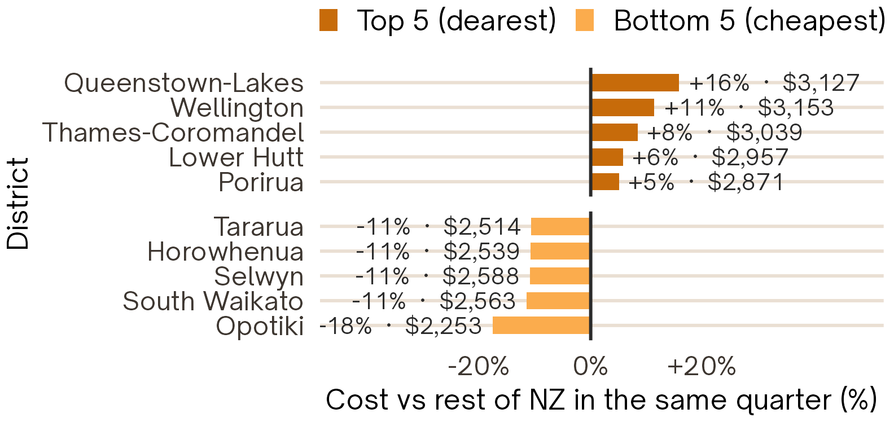
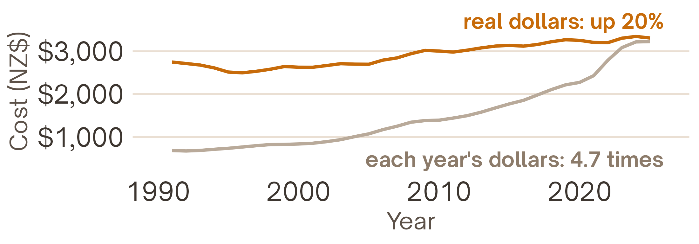
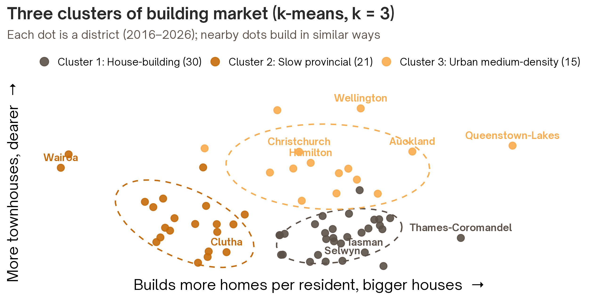
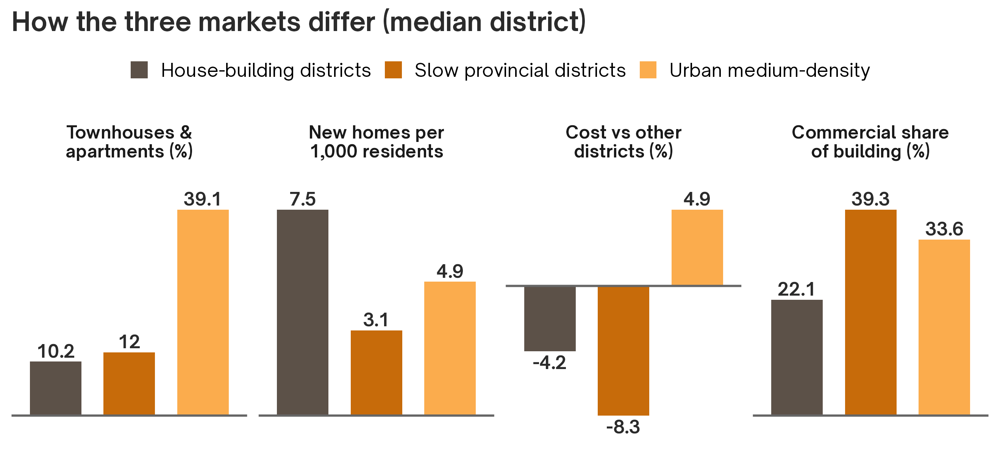
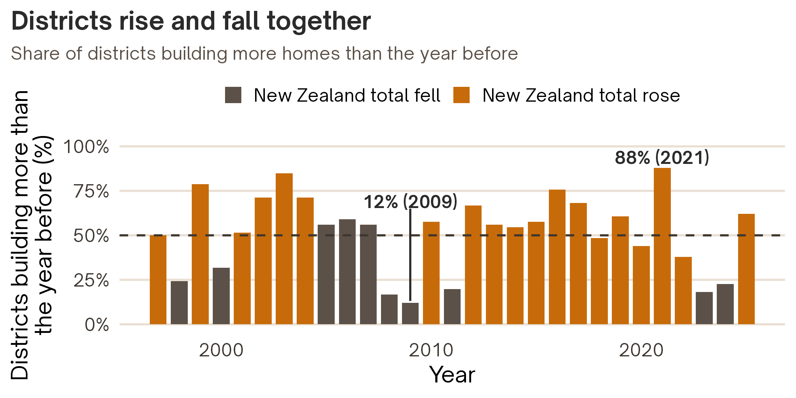

while True: learn() · GROUP 8
STAT462 Data Mining · University of Canterbury · November 2026
What New Zealand builds,
where, and at what cost
Machine learning on 36 years of Stats NZ building consents
Andrew Boulton · Harish Sahadev M · Niwesh Baraj
Background
Before anything is built, a council issues a building consent. Stats NZ records the number, value and floor
area of every consent since 1990: what New Zealand builds, where, and at what cost.
Some districts cost far more to build in than others

Median cost per square metre, 1990–2019, in June 2026 dollars. Queenstown-Lakes typically ran 16% above
the rest of New Zealand in the same quarter and Opotiki 18% below. RQ1 asks why.
Data
Stats NZ consents by district (monthly, April 1990 to June 2026) and new dwellings per 1,000 residents
(annual), deflated with the Capital Goods Price Index. Statistical Area 2 (SA2) dwelling files explored, not used (no value or area).
Most of the rise in cost is inflation, so we use June-2026 dollars throughout

Preparation: Monthly data was rolled up into 9,715 district-quarters across 67 districts.
We removed the 2010 GST change, dropped quarters with fewer than five new houses, and kept house value out of
the features so the model couldn't see the answer.
Approach
One question per family of methods. Models learn from earlier years and are tested once on later years they
never saw. Settings are tuned by time-ordered cross-validation (CV), and the simplest model within one standard
error of the best CV score is chosen.
| Question | Data used | Methods → chosen |
|---|
| RQ1 regression |
district × quarter, 1996–2026 (7,305 rows) |
10 models incl. regression tree, random forest → linear regression |
| RQ2 clustering |
one profile per district, 2016–2026 (66) |
k-means, hierarchical (Euclidean distance, 4 linkages) → k-means, k = 3 |
| RQ3 classification |
district × year, 1996–2024 (1,914 rows) |
7 models incl. LDA, QDA, classification tree → logistic regression |
Metrics. MAPE: average % error. R2: share of variation explained.
AUC: how well rises are ranked above falls (0.5 = chance, 1 = perfect). Silhouette: cluster separation (−1 to 1).
Research Question 1 (RQ1) · Regression
What drives the real cost per square metre of new houses across districts?
Hypothesis: busier, denser markets cost more per square metre.
Response: a district's cost per square metre relative to the rest of NZ in the same
quarter. The quarter alone explains 41% of real cost and the district only 19% (R2), so comparing within
each quarter removes the national price level.
Features: renovation spending, new homes per 1,000 residents, number and size of new houses,
change on last year, apartment, townhouse and retirement shares, commercial work, region.
Left out: anything built from house value (leakage), last quarter's cost, island, season.
Two feature sets: drivers only, and + district name (how much location adds).
Train 1996–2019 (5,694 district-quarters), test 2020–2026 (1,611).
- Renovation spending is the strongest driver (+10%), a sign of wealthy, busy markets.
- Building more homes per resident adds about 4%, mostly in the fastest-growing places.
- The number of new houses cuts both ways. Districts that build a lot tend to be cheaper, because
volume builders dominate, but within any one district the busy years are the dearer ones.
 Each bar: change in predicted cost when one factor goes from low (10th percentile) to high (90th),
others unchanged; average of the forest and linear regression, drivers only. Renovation: $1.4M → $14.1M a quarter.
Each bar: change in predicted cost when one factor goes from low (10th percentile) to high (90th),
others unchanged; average of the forest and linear regression, drivers only. Renovation: $1.4M → $14.1M a quarter.
| Test error, MAPE (%) | Drivers only | + district |
|---|
| Guess the national average | 10.1 |
| District's own past average | 8.0 |
| Linear regression | 8.7 | 7.9 ★ |
| Polynomial regression | 8.6 | 7.9 |
| Ridge / lasso / elastic net | 8.7 | 8.0 |
| GAM (splines) | 8.6 | 7.9 |
| Regression tree | 8.9 | 7.9 |
| Random forest | 8.6 ★ | 8.5 |
| XGBoost | 8.5 | 8.1 |
| SVM (radial) | 8.3 | 7.9 |
Test set: 2020–2026, never used in training. ★ chosen by CV (simplest within one standard
error of the best), not by test score. Test R2: 0.36 for linear regression with district, 0.27 for the forest.
Answer: The real cost per square metre depends mostly on location. Renovation spending
(+10%) and homes per resident (+4%) explain only about 15% of the gap between districts. Our best model, linear
regression with the district, is off by 7.9% on 2020–2026, against 10.1% for guessing the national average.
Research Question 2 (RQ2) · Clustering
What kinds of building markets does New Zealand have?
Hypothesis: districts form a few distinct market types.
Features (9, standardised, 2016–2026): apartment, townhouse and retirement shares; homes per
resident; growth; volatility; cost vs rest of NZ; house size; commercial share.
Choosing k: k = 3 is the most stable (bootstrap 0.84, vs 0.74 for k = 2 and 0.80 for k = 4) and
separates almost as well as the best (silhouette 0.21 vs 0.22). Ward's clustering agrees on 60 of 66 districts
(ARI 0.75). There is no test set: clustering has no right answer.
- Cluster 1 · House-building (30): These districts build most homes per resident (7.5 per 1,000 a year)
and the biggest houses. They are commuter belts next to cities like Selwyn, Waimakariri, Waikato and Waipa,
along with lifestyle areas like Tasman.
- Cluster 2 · Slow provincial (21): These build fewest homes (3.1 per 1,000), with big swings year to
year. Renovation takes largest share of housing spend (23%), and costs are the lowest of three clusters (8%
below average). Examples : Rotorua, Invercargill & Whanganui.
- Cluster 3 · Urban medium-density (15): Townhouses & apartments make up 39% of new homes, and costs
are the highest (5% above average). The largest builders are Auckland, Christchurch, Queenstown-Lakes,
Hamilton & Tauranga.

Each dot is a district, placed by the two main patterns in the nine features (principal
components); colour = cluster.
Bars: median value for the districts in each cluster, in the units of each panel title (four of the
nine features).Answer: New Zealand has three kinds of building market: house-building (30 districts),
slow provincial (21) and urban medium-density (15). The groups are stable (0.84) and two methods agree on 60 of 66
districts, but they overlap (silhouette 0.21), so they are broad types rather than sharp boxes.
Research Question 3 (RQ3) · Classification
Will a district's consents rise or fall next year?
Hypothesis: recent momentum predicts next year's direction.
Response: does the district consent more new dwellings next year than this year?
1,914 district-years; rises are 53% of training years and 48% of test years, so roughly balanced.
Features (11, known at year end): the district's size, recent growth and momentum, dwelling
mix, renovation and commercial growth, homes per resident; plus national momentum. Left out:
2-year growth (overlaps; weakest). Train 1996–2016, CV on AUC; test 2017–2024 (528 district-years).
- The national cycle matters most: when NZ builds above its 5-year average, a district's odds of rising
are 1.8× higher (per standard deviation); a strong second half nationally, 1.7×
- Apartment-heavy districts fall back: their consents come in a few large projects, so a big year is
often followed by a smaller one (odds 0.75× per SD)
- A district already above its own 5-year average also tends to fall back (0.82×)

Each bar: share of districts consenting more new homes than the year before; colour: whether the NZ
total rose. From 12% (2009) to 88% (2021): districts move with the country.
| Test, 2018–25 (%) | Accuracy | Precision | Recall | AUC |
|---|
| Always say "rise" | 47.7 | 47.7 | 100 | 0.50 |
| Opposite of this year | 53.0 | 50.7 | 54.8 | 0.53 |
| Logistic regression ★ | 58.3 | 55.3 | 65.9 | 0.63 |
| Lasso logistic | 58.5 | 55.5 | 66.3 | 0.63 |
| LDA | 58.0 | 54.8 | 67.5 | 0.63 |
| QDA | 54.9 | 52.0 | 70.6 | 0.61 |
| Classification tree | 53.0 | 50.9 | 46.8 | 0.52 |
| k-nearest neighbours | 56.4 | 53.1 | 75.4 | 0.63 |
| Random forest | 58.0 | 55.9 | 56.7 | 0.62 |
All models on the same 528 test district-years. Precision and recall are for "rise".
★ chosen by CV AUC (0.676; lasso 0.677 and LDA 0.675 are within one standard error, so the simpler model is kept).
Answer: Whether a district's consents rise or fall next year is only modestly
predictable. Logistic regression called 58% of 2018–2025 district-years correctly (AUC 0.63), against 53% for the
best simple rule. In most years, districts simply go up or down along with the country as a whole.
Conclusions
- Where you build matters more than anything we measured: renovation spending and growth make a
district dearer, but explain only about 15% of the gap between districts.
- Three broad kinds of building market (house-building, slow provincial, urban) that blur into each
other rather than forming separate boxes.
- Districts rise and fall with the country, so next year's direction is only a little better than a
coin toss: national turning points are not in consent data.
- Simple, explainable models were enough: linear and logistic regression matched XGBoost, SVMs and
forests on unseen years.
- Hypotheses: H1 is partly supported, since location dominates. H2 is partly supported, since the
clusters are only weakly separated. H3 is weakly supported: national momentum helps, but district momentum
reverses.
Limitations & future work
- Consents are not completions: value is an estimate at consent time and excludes land, so we model
planned cost. Completion and land-value data would fix this.
- One national price index: places where costs rose faster than NZ look dearer; regional cost
indexes would help.
- District averages hide local detail: SA2 files have counts only; SA2 values and floor areas would
allow finer analysis.
- Missing drivers: no land prices, interest rates or migration, which likely drive turning points
(RQ3) and location premiums (RQ1).
- Associations, not causes; relationships drifted after 2023, so models need refitting.